The Managed grammar: no decisions, no signals to score. A rule, a weekly deposit, the S&P core accumulating. Everything here is about cadence and accretion, not judgment.
The field-study content re-set as a luxury spec sheet: two columns of observed behaviour, a verdict block, and the brand bleeding off the foot. Dark body, monochrome, institutional.
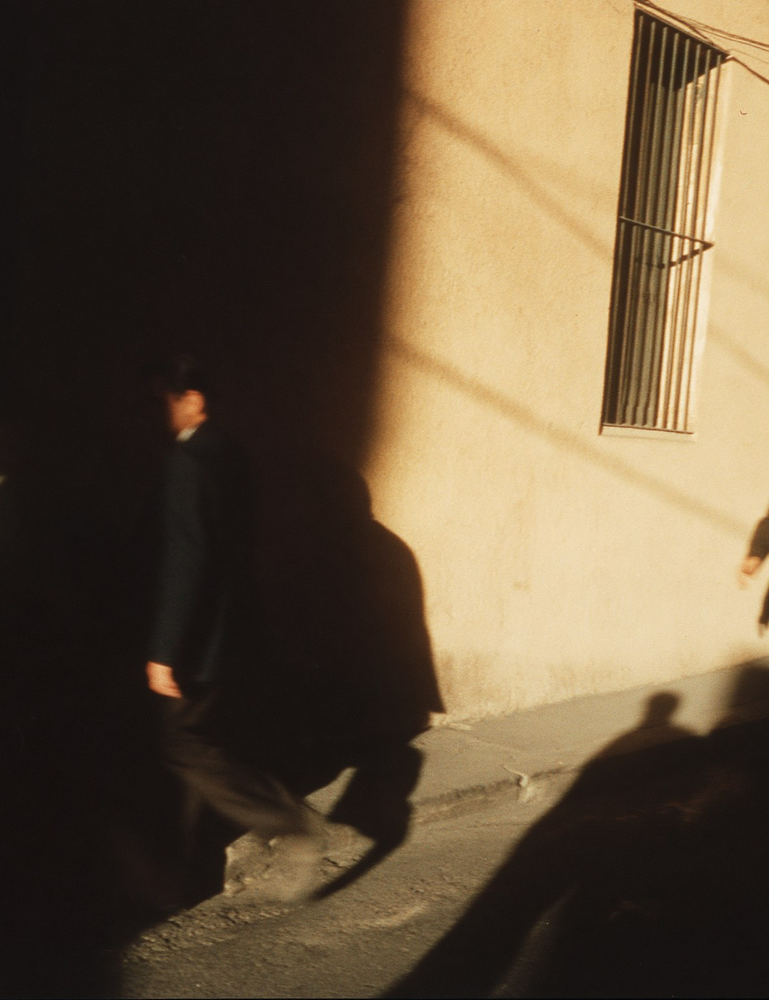
A gallery-register poster, apart from the reels: the lone figure catalogued as specimen on a paper ground, one brick-red edition mark, IBM Plex. Institution, not influencer.
Observed in a vast institution. Unmoved by the room.
Halftone cards cut like a film reel: circles, rings, stripes, a giant week numeral. Through every one of them a single held line stays fixed at the same place, growing a little wider each week. The market changes its picture; the rule does not move.
A generic investing-app promise, set as a clean modernist poster, then struck through with the II mark sprayed on like graffiti. The system defaces the hype.
Twelve month columns of Fridays fill one by one. When the last week lands, the big numeral rolls to the next year and the sheet starts again. Consistency measured in whole years.
A dated ledger line for every Monday of the year, printed into one even texture. Over it, a single line graph: the only thing that changed while the ledger repeated.
The wheel, redrawn in ink: January on the outer orbit, December at the core, every day a faint tick sweeping clockwise. Only the Mondays print bright, and the centre keeps the running total.
The five portfolios as full-width strata, risk settling downward - the one place the portfolio palette is allowed to speak at full size. A bracket marks the layer you were matched to.
A living city in colour, seen from above. One walker is marked. The annotation says only that a deposit executed this morning. The rule does not need anyone at a desk.
Trains weaving through a city, and a departure board of Fridays: executed, executed, executed, next. Managed as public infrastructure - punctual, indifferent, reliable.
An aerial city at dusk, in colour. One thin line runs from now to 2041, a tick per year, a slow dot climbing it. Patience drawn over a city that never stops moving.
The crossing photographed, then rebuilt as a line screen: people become signal density. Inside the noise, one clean ring marks the walker whose deposit just executed.
Archival plates cycle like flashcards: crowds, trains, rooms, cities. The image never repeats on schedule, but the stamp underneath does. One week, one execution, whatever the world looked like.
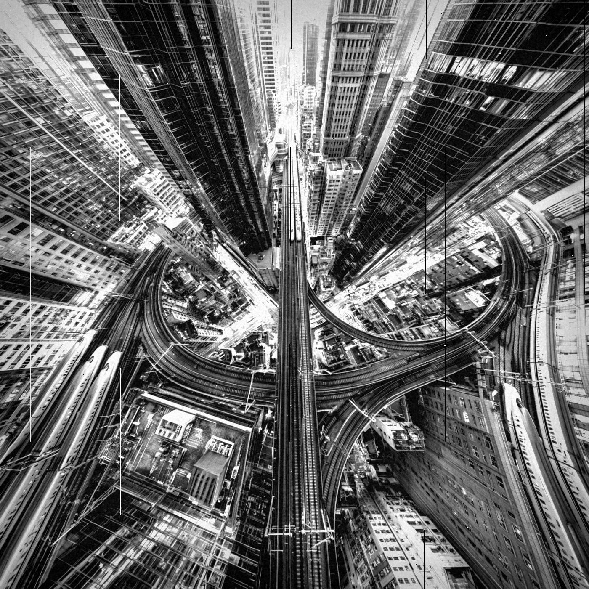
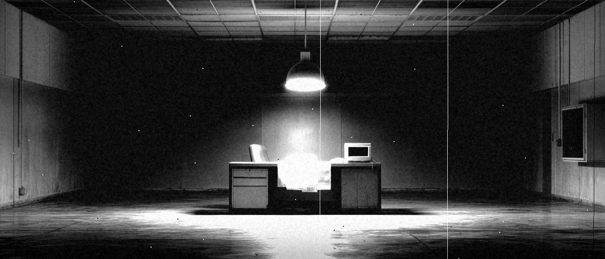
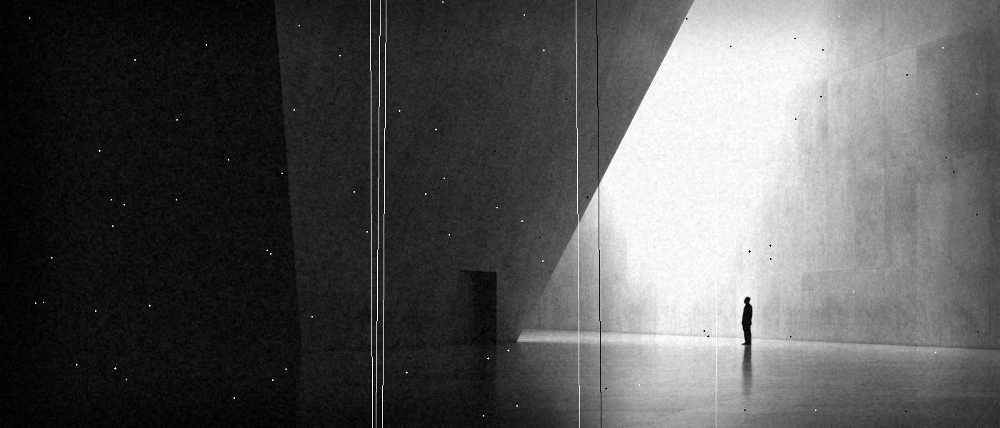
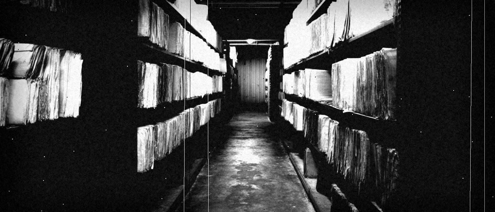
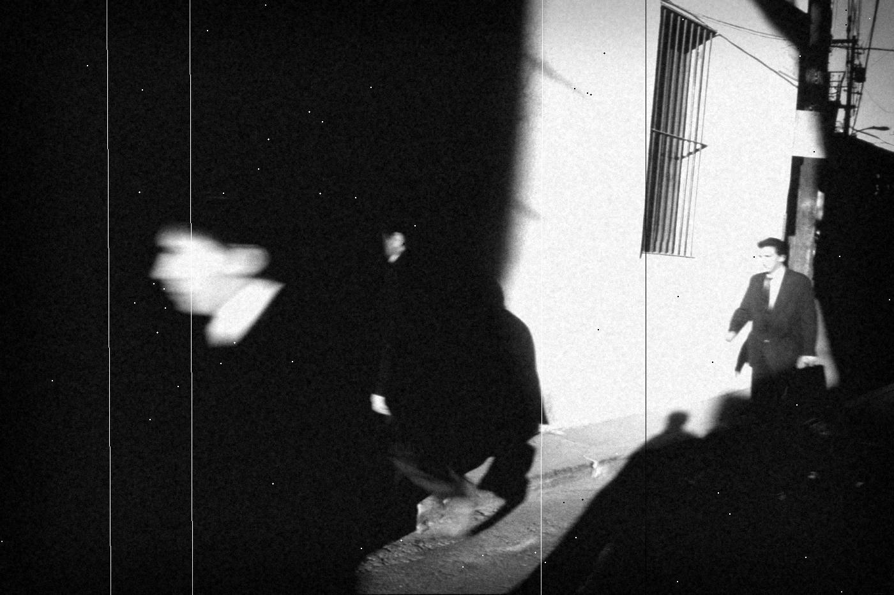
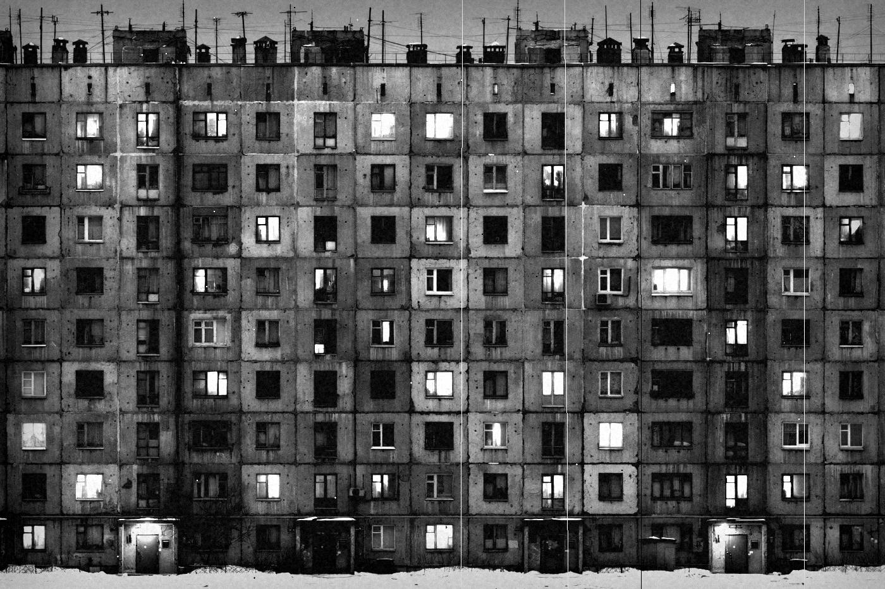
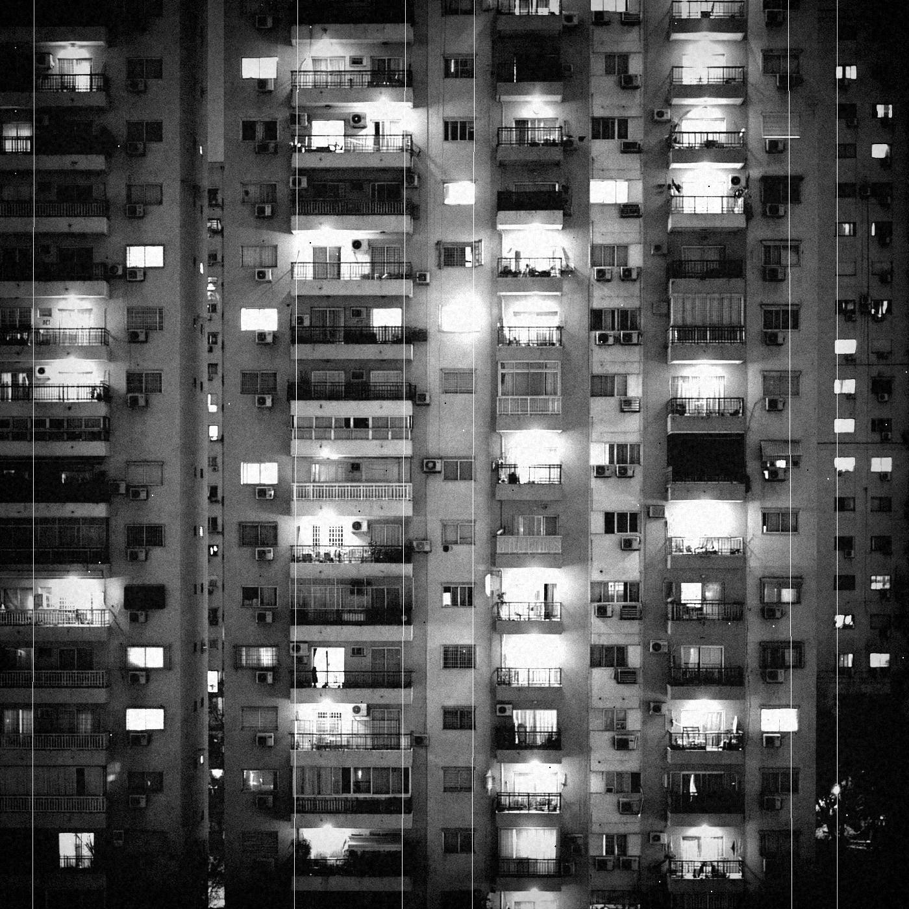
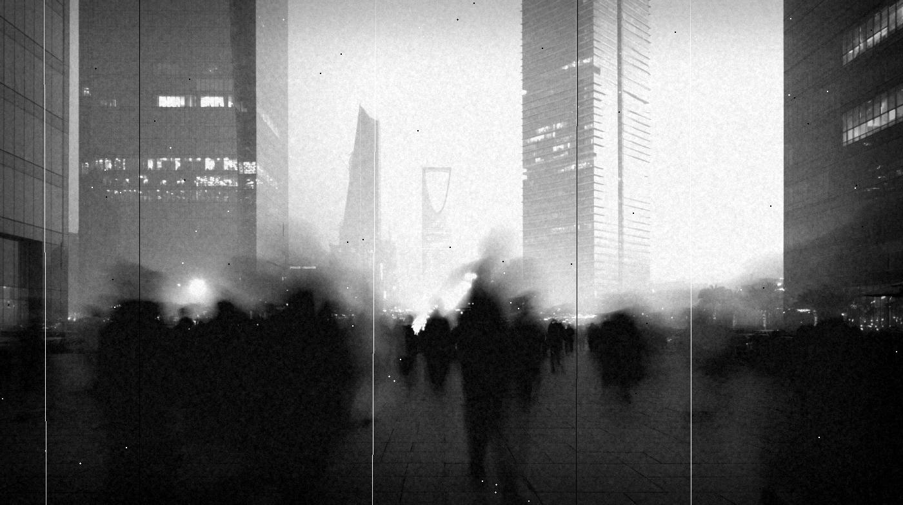
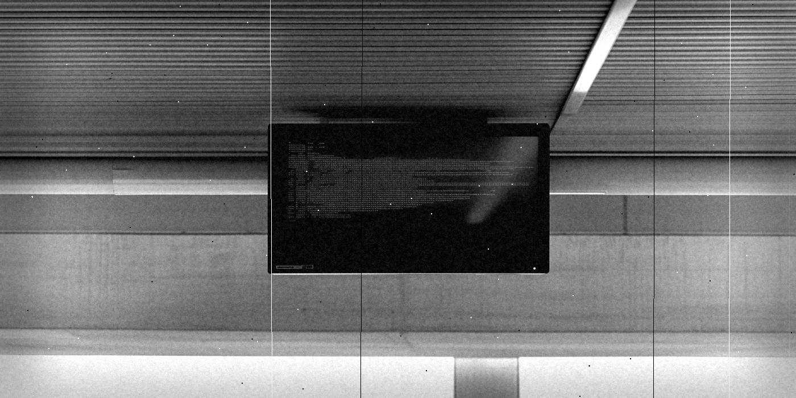
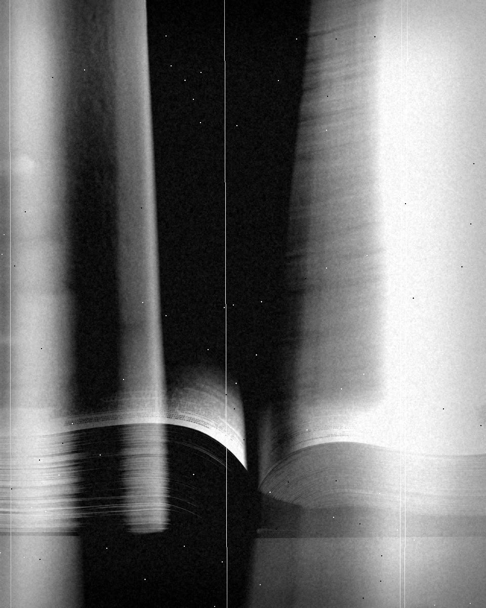